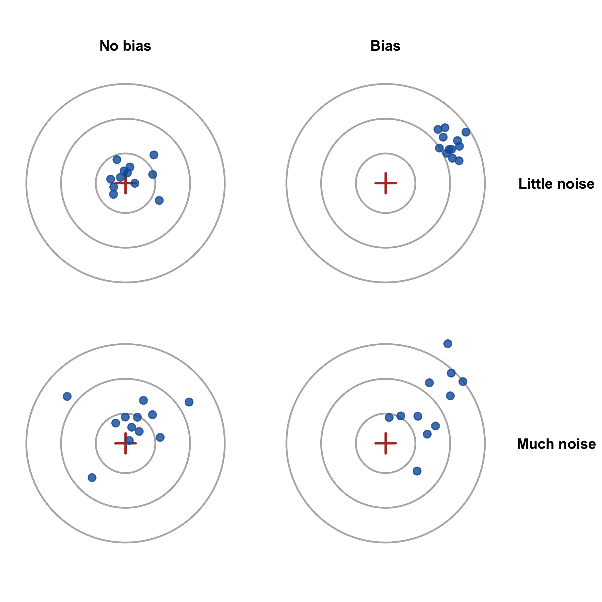
3 Uncertainty
Driving question: How sure can I be?
Almost every number a marketing manager sees comes from a sample: the satisfaction score from last month’s customer survey, the conversion rate in an A/B test, the share of users who say they would recommend the app. None of these numbers is the “true” value — they are estimates, and a different sample would have produced a slightly different number. This chapter is about how large that uncertainty is, where it comes from, and how to express it honestly. After working through this chapter you will be able to:
- Distinguish population and sample, and parameters and statistics — and explain why any number computed from a sample is uncertain
- Explain sampling variation and the sampling distribution
- Compute and interpret the standard error, and explain how it depends on the sample size and on the variability in the data
- Explain what the central limit theorem says and why it matters in practice
- Construct and correctly interpret confidence intervals for means and for shares — including the margin of error of a poll
- Distinguish random error, which statistics can quantify, from systematic error (bias), which it cannot
The chapter builds intuition with simulations and interactive widgets first; the formulas follow the intuition, not the other way round. Take the time to play with the widgets — they are the fastest way to understand what the formulas say.
3.1 Motivation: what a poll can and cannot tell you
In September 2024, a few weeks before the US presidential election, a news report on a national poll ended with the following sentence:
“The poll was conducted Sept. 13–17 and surveyed 1,000 registered voters nationally. The margin of error is plus or minus 3.1 percentage points.”
— NBC News (2024)
Image placeholder: screenshot of a poll report with the margin of error (e.g., the NBC News poll of September 2024)
img/ch03/poll_report.png
Sentences like this appear under almost every poll, and most readers skip them. Yet they raise exactly the questions this chapter answers. More than 150 million people voted in that election — how can 1,000 respondents tell us anything about them? Where does “plus or minus 3.1 percentage points” come from, and what does it actually promise? And why do pollsters survey 1,000 people, and not 10,000?
Eight years earlier, the polls had delivered a lesson in what the margin of error does not promise. In the 2016 election, state-level polls in several Midwestern states underestimated support for Donald Trump by more than their margins of error. Post-election analyses pointed to voters who decided late and to samples in which voters without a college degree were underrepresented — and not properly corrected for (Kennedy et al. 2018).
Image placeholder: a headline or chart on the 2016 polling miss
img/ch03/polls_2016.png
The two stories illustrate the two kinds of error that every estimate from a sample is subject to (Figure 3.1):
- Random error (or sampling variation): each sample contains, by chance, a slightly different mix of people, so each estimate lands slightly off target — sometimes too high, sometimes too low. Random error is unavoidable, but it can be quantified, and it shrinks as the sample grows. The margin of error is a statement about random error.
- Systematic error (or bias): the sample differs from the population in a systematic way — because some groups are harder to reach, less willing to answer, or not in the sampling frame at all. Bias pushes every estimate in the same direction, and a larger sample does not help: it only makes the wrong answer more precise. You met this problem in Chapter 1 (the “more confidently wrong” widget) and in Section 2.5.6 (the charts contain only the hits).
This chapter is about the first kind: how to quantify random error. The second kind returns at the end of the chapter (Section 3.9) — as the reminder of what no confidence interval can tell you.
Why should a marketing manager care? Because every business decision based on a sample needs an answer to the question: is this difference real, or could it be noise? If the satisfaction score in your survey rose from 7.2 to 7.5, or if the new landing page converted 3.4% of visitors instead of 3.1%, the first question is not “why?” but “how sure are we that anything changed at all?”. This chapter lays the foundation; the next one uses it to compare groups in experiments.
3.2 Populations and samples
3.2.1 From the sample to the population
The population is the entire group we want to draw conclusions about: all voters, all customers of a brand, all WU students, all stores of a retail chain. A census collects data from every member of the population. Censuses are rare in marketing — they are expensive, slow, and often impossible (you cannot survey all future customers). Instead, we study a sample: a subgroup of the population, which we use to learn about the whole. Generalizing from the sample to the population is called statistical inference.
To keep the two levels apart, statistics uses different symbols for the same quantity in the population (a parameter, usually a Greek letter) and in the sample (a statistic, usually a Latin letter; Table 3.1).
| Sample (statistic) | Population (parameter) | |
|---|---|---|
| Number of observations | \(n\) | \(N\) |
| Mean | \(\bar{x}\) (“x-bar”) | \(\mu\) (“mu”) |
| Standard deviation | \(s\) | \(\sigma\) (“sigma”) |
| Share (proportion) | \(\hat{p}\) (“p-hat”) | \(p\) |
The population parameters are what we would like to know; the sample statistics are what we can compute. The rest of this chapter is about the bridge between the two.
3.2.2 How the sample is drawn matters
Whether a sample allows conclusions about the population depends on how it was drawn (Table 3.2).
| Probability sampling | Non-probability sampling | |
|---|---|---|
| Principle | Every member of the population has a known chance of being selected; selection is random | Selection by convenience or by the researcher’s judgment |
| Techniques | Simple random sampling; stratified sampling (random draws within subgroups); cluster sampling (random draws of whole groups, e.g., stores); systematic sampling (every k-th element of a list) | Convenience sampling (whoever is easy to reach); quota sampling (fill quotas, e.g., by age and gender); judgmental sampling; snowball sampling (respondents recruit further respondents) |
| Uncertainty | Can be quantified with the methods of this chapter | Cannot be quantified reliably — the sample may be systematically different from the population |
In a simple random sample, every member of the population has the same chance of being selected — the benchmark design that all methods in this chapter assume. Real-world samples often fall short of this ideal, for three common reasons:
- Under-coverage: parts of the population are not in the sampling frame at all (e.g., an online survey misses customers without internet access).
- Non-response bias: the people who do not respond differ from those who do (e.g., dissatisfied customers ignore the satisfaction survey — or, conversely, only they answer).
- Voluntary response bias: respondents select themselves, typically those with strong opinions (e.g., online reviews, polls on a website).
NoteWhat this means for your group project
The survey in your group project will be a convenience sample — friends, fellow students, family. That is fine for learning, and it is common in practice, but be honest about it: the confidence intervals you compute describe the random error as if your sample were random; they say nothing about how well your respondents represent a larger population. The good news: for your experiment, this matters much less. Because the conditions are assigned randomly within your sample, the comparison between the conditions is still fair — randomization protects the comparison even when the sample itself is not representative (Section 1.6).
3.3 Sampling variation
3.3.1 A world in which we know the truth
In reality, we never know the population values — that is why we sample. To understand what sampling does, however, it helps to start in a world in which we do know them. We therefore simulate one: suppose there are 25,000 students at WU, and each of them has told us how many hours they listened to music (on Spotify and similar services) in the past month. Figure 3.2 shows the distribution. Because we generated the data ourselves, we know the true population values exactly: the population mean is \(\mu\) = 49.93 hours, and the population standard deviation is \(\sigma\) = 10.02 hours.
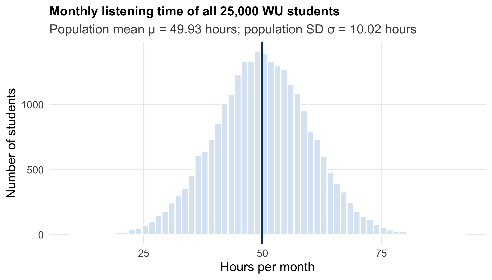
3.3.2 One sample, then another
Now we play market researcher. We cannot ask all 25,000 students, so we draw a random sample of 100 students and compute their average listening time. Then we do it again, with a new random sample — and again. Figure 3.3 shows four such samples.
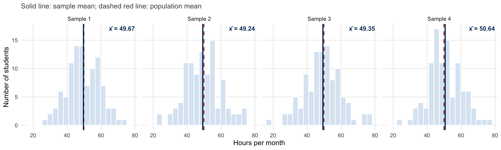
Each sample mean is close to the population mean — but none hits it exactly, and each is different. This is sampling variation: which students happen to end up in the sample is a matter of chance, and so the sample mean varies from sample to sample. Sampling variation is not a mistake; it is the unavoidable consequence of looking at a part instead of the whole. The question is only how large it is.
3.3.3 The sampling distribution
The right-hand chart of the widget has a name: it shows the sampling distribution of the sample mean — the distribution of the means we would get if we could repeat our study over and over again. In reality, we never see it; we only ever have one sample. But it describes how much we can trust that one sample. Figure 3.4 shows the sampling distribution for 20,000 samples of 100 students each.
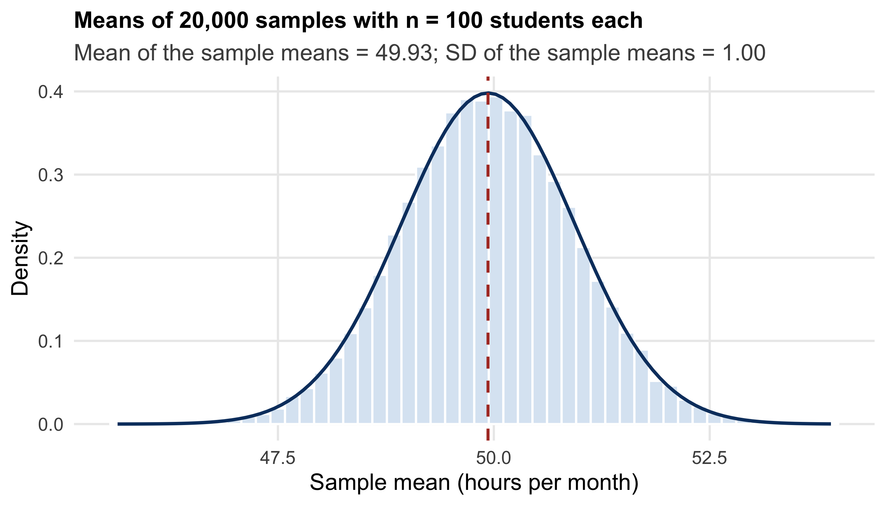
Three properties of the sampling distribution are the foundation of everything that follows:
- It is centered on the truth. The mean of all sample means equals the population mean. On average, the sample mean neither over- nor underestimates — it is an unbiased estimate.
- It has a known width. The sample means scatter around the population mean by a predictable amount. This width is called the standard error (Section 3.4).
- It has a known shape. The sample means follow a bell-shaped, normal distribution — and, as Section 3.5 shows, this holds even when the data themselves are not normally distributed.
Together, these three properties allow us to say something about the population from a single sample: not the exact value, but a range of plausible values.
3.4 The standard error
3.4.1 How precise is a sample mean?
The width of the sampling distribution — its standard deviation — tells us how precise a sample mean is. It is called the standard error of the mean and, remarkably, it can be calculated without drawing thousands of samples:
\[ \sigma_{\bar{x}} = \frac{\sigma}{\sqrt{n}} \]
In words: the standard error equals the standard deviation in the population (\(\sigma\)) divided by the square root of the sample size (\(n\)). For our example: \(\sigma_{\bar{x}}\) = 10.02 / \(\sqrt{100}\) = 1.00 hours — exactly the width of the simulated sampling distribution in Figure 3.4. The formula contains the two things that determine precision.
The sample size. The more students in the sample, the more closely the sample mean approaches the population mean (Figure 3.5). Think of the extremes: a “sample” of one student can land almost anywhere in the population distribution; a sample of 24,999 students will be almost exactly right.
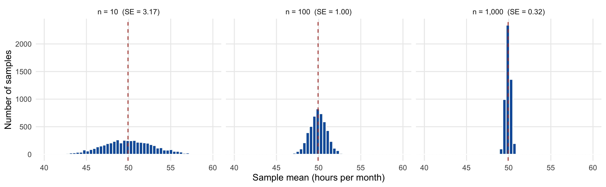
The variability in the population. If all students listened to music for about the same time, any sample would give almost the same answer; if listening times vary enormously, samples differ more (Figure 3.6).
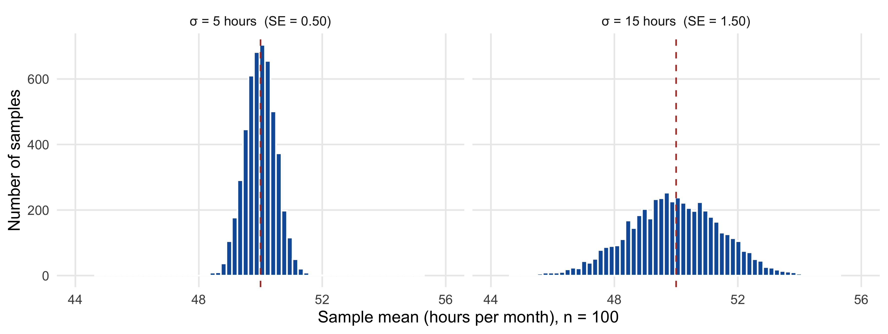
3.4.2 The square-root law: precision has diminishing returns
Because the sample size enters the formula as a square root, precision grows more slowly than the sample (Figure 3.7). To halve the standard error, you need four times as many observations. Going from 100 to 400 respondents halves the uncertainty; going from 400 to 1,600 halves it again — at four times the cost. This is why polls typically survey around 1,000 people and not 10,000: the tenfold cost would reduce the margin of error only from about 3 to about 1 percentage point.
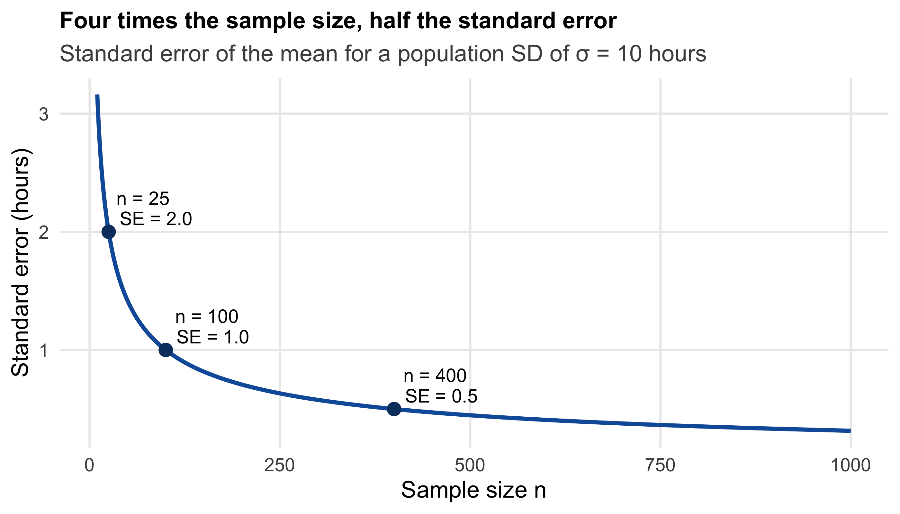
3.4.3 Two kinds of variation: standard deviation vs. standard error
The standard deviation and the standard error are easily confused, but they answer different questions (Figure 3.8):
- The standard deviation describes how much individuals differ from each other — here, how much the listening times of students vary. It is a property of the data, and it does not shrink when you collect more data: with more students, you simply get a more precise picture of how much they differ.
- The standard error describes how much sample means would differ from each other if we repeated the study — the precision of our estimate. It shrinks as the sample grows.
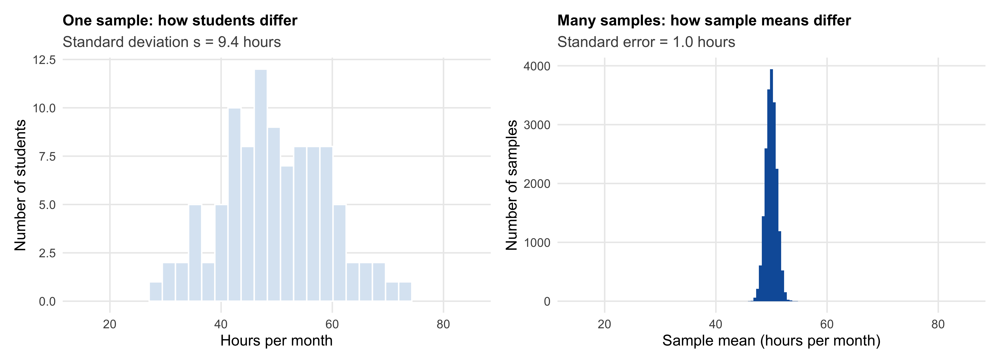
ImportantWhich one to report?
Report the standard deviation when you describe how much customers (or stores, or products) differ — “listening times vary considerably; the standard deviation is 10 hours”. Report the standard error (or a confidence interval, Section 3.6) when you describe how precisely you have estimated a mean — “the average listening time is 49 hours, with a standard error of 1 hour”. Charts that show “error bars” should always say which of the two the bars represent.
3.4.4 Estimating the standard error from one sample
The formula above has one catch: it requires the population standard deviation \(\sigma\), which we do not know — if we knew the population, we would not need a sample. In practice, we replace \(\sigma\) with the standard deviation of our sample, \(s\):
\[ SE_{\bar{x}} = \frac{s}{\sqrt{n}} \]
For our first sample of 100 students (mean 49.24, standard deviation \(s\) = 10.44), this gives \(SE_{\bar{x}}\) = 10.44 / 10 = 1.04 hours — very close to the true value of 1.00. With a random sample of reasonable size, the sample standard deviation is a good estimate of the population standard deviation; the additional uncertainty it introduces is taken into account by the t-distribution (Section 3.6).
NoteUnder the hood: why divide by n − 1?
The sample standard deviation is computed as \(s = \sqrt{\frac{1}{n-1}\sum_{i=1}^n (x_i - \bar{x})^2}\) — dividing by \(n-1\), not by \(n\). The reason: the deviations are measured from the sample mean \(\bar{x}\), which is by construction the point closest to all observations in the sample. The deviations from \(\bar{x}\) are therefore, on average, slightly smaller than the deviations from the (unknown) population mean \(\mu\) would be. Dividing by \(n-1\) instead of \(n\) (Bessel’s correction) compensates for this downward bias. For large samples, the difference is negligible; R’s sd() and var() always use \(n-1\).
3.5 The central limit theorem
3.5.1 What if the data are not normal?
So far, our population was normally distributed — a convenient assumption, but a rare one in marketing. Listening times are more realistically right-skewed: most students listen a moderate amount, and a few enthusiasts listen a lot (Figure 3.9). The same is true for sales, streams, visits, and revenues.
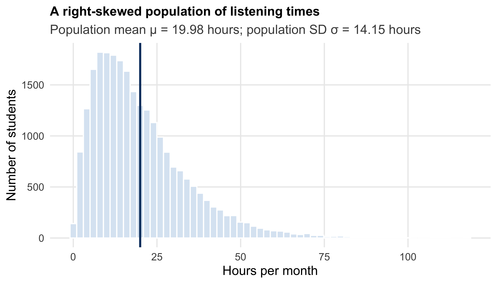
What happens to the sampling distribution now? Figure 3.10 shows the means of 10,000 samples, for four different sample sizes. With samples of size 1, the “sample means” are just individual students, and their distribution is as skewed as the population. But as the samples get larger, the distribution of the sample means becomes more and more symmetric and bell-shaped — and narrower.
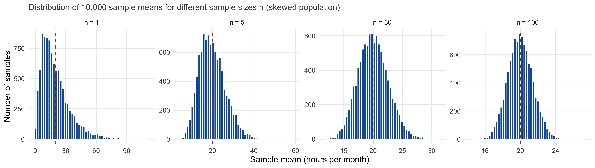
This is the central limit theorem: whatever the shape of the population distribution, the distribution of sample means approaches a normal distribution as the sample size grows — centered on the population mean, with a width equal to the standard error \(\sigma / \sqrt{n}\). (The theorem requires that the population has a finite mean and variance — true for virtually all variables you will encounter.)
3.5.2 Why the central limit theorem matters
The central limit theorem is the reason why the methods in this and the following chapters work for real marketing data, which are rarely normally distributed. We do not need the data to be normal — we need the sampling distribution of the mean to be (approximately) normal, and the central limit theorem guarantees this for sufficiently large samples.
How large is “sufficiently large”? A common rule of thumb is \(n \geq 30\), but it is no law of nature: for roughly symmetric data, much smaller samples suffice; for extremely skewed data — like the streams in Chapter 2, where a few tracks have billions of streams — even several hundred observations may not be enough. When in doubt, look at the data first (Section 2.7).
3.6 Confidence intervals
3.6.1 From a point estimate to an interval estimate
Reporting “the average listening time is 49.2 hours” gives a point estimate — our single best guess. It hides the uncertainty: the next sample would give a different number. An interval estimate adds the uncertainty: “the average listening time is between 47.2 and 51.3 hours”. Such an interval is called a confidence interval.
A helpful image is that of casting a net (Radziwill 2015). We cannot see the true population mean, but we can throw a net around our estimate that catches it most of the time. How big the net must be depends on two things: how sure we want to be of catching the truth, and how much our estimate wobbles from sample to sample.
\[ \text{Confidence interval} = \text{estimate} \pm \underbrace{\text{critical value}}_{\text{how sure we want to be}} \times \underbrace{\text{standard error}}_{\text{how much the estimate wobbles}} \]
3.6.2 Constructing a 95% confidence interval
From the central limit theorem, we know that sample means are approximately normally distributed around the population mean, with a standard deviation equal to the standard error. For a normal distribution, 95% of all values lie within 1.96 standard deviations of the mean. Hence, in 95% of all samples, the sample mean is within 1.96 standard errors of the population mean — and, turned around, the interval
\[ \bar{x} \pm 1.96 \times SE_{\bar{x}} \]
contains the population mean in 95% of all samples. For our sample of 100 students: 49.24 ± 1.96 × 1.04 = [47.19; 51.29] hours. The true population mean (49.93) is indeed inside.
3.6.3 What “95% confidence” means — and what it does not
The confidence refers to the method, not to a single interval. If we repeated the study many times and computed a 95% confidence interval each time, about 95% of these intervals would contain the true population mean — and about 5% would miss it. Figure 3.11 shows this for 100 samples.
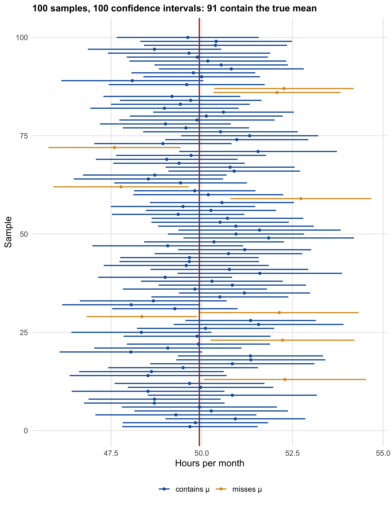
WarningA common misinterpretation
For a specific interval, it is tempting to say “there is a 95% probability that the true mean lies between 47.2 and 51.3.” Strictly speaking, this is not correct: the true mean is a fixed number, and a specific interval either contains it or it does not — we just do not know which. The correct statement is about the procedure: 95% of the intervals constructed this way contain the true value. In practice, it is fine to say “we are 95% confident that the average listening time lies between … and …”, as long as you remember that roughly one in twenty such intervals is wrong. Note also that values in the middle of the interval are not “more true” than values near its edges.
3.6.4 Confidence level and width: a trade-off
A 95% level is a convention, not a law. If you want to be more confident of catching the true value, you need a wider net: a 99% interval uses a critical value of 2.58 instead of 1.96 and is correspondingly wider; a 90% interval (critical value 1.64) is narrower (Figure 3.12). The only way to get an interval that is both narrow and reliable is a larger sample.
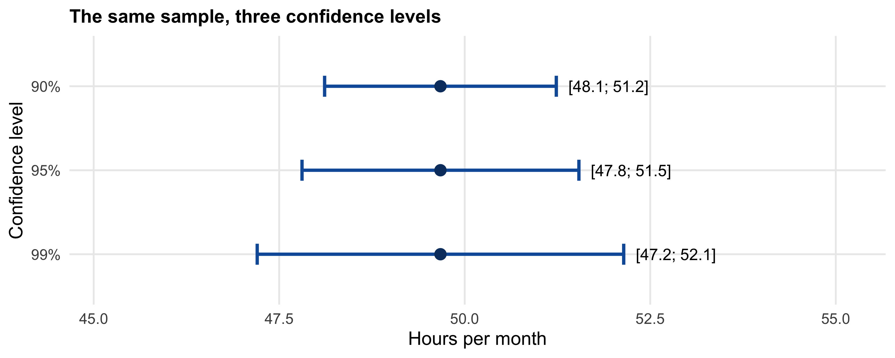
3.6.5 Small samples: the t-distribution
The critical value of 1.96 assumes that we know the standard error exactly. In practice, we estimate it from the sample (\(s / \sqrt{n}\)), which adds a little extra uncertainty — noticeable in small samples. The t-distribution accounts for this: it looks like the normal distribution but has “fatter tails”, and it depends on the sample size via the degrees of freedom (\(n - 1\)). Table 3.3 shows the critical values for a 95% interval.
| Sample size n | 10 | 20 | 30 | 100 | very large |
|---|---|---|---|---|---|
| Critical value (95%) | 2.26 | 2.09 | 2.05 | 1.98 | 1.96 |
For samples of about 100 or more, the difference to 1.96 is negligible; for small samples, it matters. You do not need to look these values up: R’s t.test() computes confidence intervals with the correct t value automatically (Section 3.8).
3.7 Uncertainty in shares: the margin of error of a poll
3.7.2 Where the ± 3.1 points come from
We can now decode the poll from Section 3.1. Pollsters report the maximum margin of error, which occurs at a share of 50%. With 1,000 respondents:
\[ 1.96 \times \sqrt{\frac{0.5 \times 0.5}{1{,}000}} = 1.96 \times 0.0158 = 0.031 = 3.1 \text{ percentage points} \]
This is exactly the number in the news report. Suppose the poll found 48% for candidate A and 45% for candidate B (Figure 3.13). Each share comes with its margin of error of about ± 3 points.
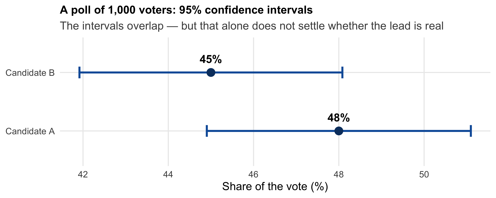
Two practical lessons follow. First, the margin of error of the lead is larger than the margin of error of each share: the 3-point lead in our example has a margin of error of roughly ± 6 points, about twice the reported margin — because an error in one candidate’s share usually comes with an error in the opposite direction in the other’s. A 3-point lead in a poll with a ± 3.1-point margin of error is therefore far from a safe lead. Second, the reported margin of error covers only random error. It says nothing about who was reachable, who refused to answer, or who changed their mind after the poll — the errors that mattered in 2016.
3.7.3 How many respondents do you need?
Because of the square-root law (Section 3.4), the margin of error shrinks ever more slowly as the sample grows (Figure 3.14). With the roughly 120 respondents of a typical group project, a share of about 50% comes with a margin of error of about ± 9 percentage points — useful to keep in mind before you interpret a difference of 5 points between two groups.
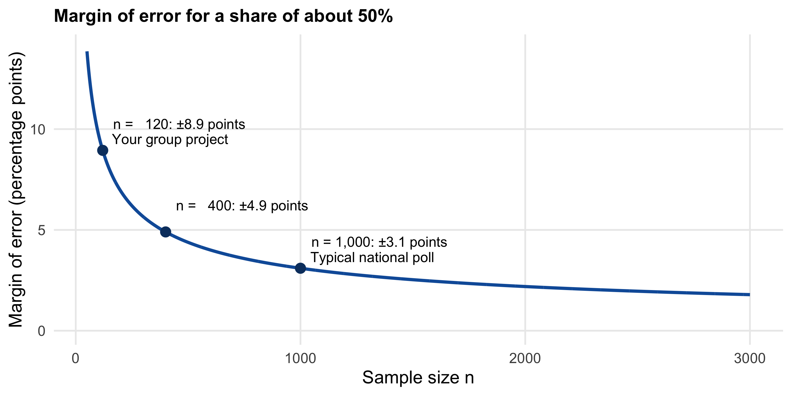
The same formula applies to many marketing metrics: the conversion rate of a landing page, the click-through rate of an ad, the share of customers who churn. And it applies separately to each group of an A/B test — which is where the next chapter picks up.
3.8 Uncertainty in R
In practice, we never simulate a population — we have one sample and want an estimate with its uncertainty. Let us take the perspective of a market researcher who has surveyed a random sample of 100 WU students about their monthly listening time. (We draw the sample from our skewed population, but from now on we pretend we had never seen the population.)
library(tidyverse)
set.seed(6789)
population <- rgamma(25000, shape = 2, scale = 10) # the "unknown" population
listening <- tibble(hours = sample(population, size = 100))3.8.1 A confidence interval for a mean — step by step
n <- nrow(listening)
xbar <- mean(listening$hours)
s <- sd(listening$hours)
se <- s / sqrt(n) # standard error of the mean
crit <- qt(0.975, df = n - 1) # critical value of the t-distribution (95%)
c(mean = xbar, se = se, lower = xbar - crit * se, upper = xbar + crit * se) mean se lower upper
19.779464 1.486716 16.829496 22.729432 qt(0.975, df = n - 1) returns the critical value that cuts off 2.5% in each tail of the t-distribution (qnorm(0.975) would give 1.96 for the normal distribution). We use 0.975 and not 0.95 because the 5% of intervals that miss are split between the two ends.
3.8.2 The same in one line
The function t.test() computes the confidence interval directly (the test itself is the topic of the next chapter):
t.test(listening$hours)$conf.int[1] 16.82950 22.72943
attr(,"conf.level")
[1] 0.95For several groups at once, compute the ingredients with group_by() and summarise() — for instance, for students who listen via a paid subscription vs. a free account (a simulated variable, for illustration):
listening <- listening |>
mutate(account = sample(c("paid", "free"), size = n(), replace = TRUE, prob = c(0.4, 0.6)))
listening |>
group_by(account) |>
summarise(
n = n(),
mean = mean(hours),
se = sd(hours) / sqrt(n),
lower = mean - qt(0.975, n - 1) * se,
upper = mean + qt(0.975, n - 1) * se
)# A tibble: 2 × 6
account n mean se lower upper
<chr> <int> <dbl> <dbl> <dbl> <dbl>
1 free 55 19.6 2.00 15.6 23.7
2 paid 45 19.9 2.24 15.4 24.53.8.4 Planning the sample size
How many respondents do we need to estimate a share with a margin of error of ± 5 percentage points? Solving the margin-of-error formula for n, with the worst case of a 50% share:
me_target <- 0.05
ceiling(qnorm(0.975)^2 * 0.5 * 0.5 / me_target^2)[1] 385
NoteUnder the hood: the bootstrap
The formulas above rely on the central limit theorem. A computer-based alternative that needs no formula is the bootstrap: treat your sample as a stand-in for the population, draw many samples from your sample (with replacement, each of the same size), and look at how much the statistic varies across them. The middle 95% of the bootstrap estimates form a confidence interval. The bootstrap works for almost any statistic — medians, ratios, differences — where no simple formula exists.
set.seed(1)
boot_medians <- replicate(5000, median(sample(listening$hours, replace = TRUE)))
quantile(boot_medians, c(0.025, 0.975)) # 95% bootstrap interval for the median 2.5% 97.5%
11.55454 19.23654 3.9 What confidence intervals do not tell you
Confidence intervals are one of the most useful tools in this course — and one of the most over-interpreted. Keep three limits in mind.
1. They cover random error only. A confidence interval quantifies how much the estimate would vary across random samples. It says nothing about systematic error: a biased sample produces a precise but wrong estimate, and a larger biased sample produces a more precise, equally wrong one. The 2016 polls (Section 3.1), the self-selected comparisons of Chapter 1, and the chart-only data of Section 2.5.6 are all problems that no confidence interval can reveal.
2. They describe the precision of an estimate, not the spread of individuals. A narrow interval for the average listening time does not mean that all students listen about the same amount (Figure 3.8).
3. They are statements about a procedure. Roughly one in twenty 95% intervals misses the true value — and if you compute many intervals (for many segments, many metrics, many weeks), some will miss. We return to this “multiple comparisons” problem in the next chapter.
With these tools in place, we can now turn to the question that motivated them: when an experiment shows a difference between two groups — a new landing page vs. the old one, one ad vs. another — is the difference larger than what we would expect from sampling variation alone? The difference between two means has its own standard error, and the logic of this chapter carries over one to one. That is the subject of the next chapter.
Learning check
(LC3.1) A poll of 1,000 voters reports a margin of error of ± 3.1 percentage points. (a) Show how this number is calculated. (b) Name one source of error that the margin of error does not cover.
(LC3.2) You double the sample size of your customer survey from 400 to 800 respondents. By what factor does the standard error of the mean change?
(LC3.3) As a marketing manager at a streaming service, you want to know the average weekly listening time of your users. In a random sample of 180 users, the mean listening time is 7.34 hours per week and the standard deviation is 6.87 hours. Compute the 95% confidence interval (use 1.96 as the critical value).
(LC3.4) Which statements about the standard deviation (SD) and the standard error (SE) are correct?
(LC3.5) Which statement is the correct interpretation of a 95% confidence interval?
(LC3.6) The revenue per customer in your online shop is strongly right-skewed. Can you still compute a confidence interval for the average revenue per customer using the methods of this chapter? Explain, and state what the answer depends on.
(LC3.7) An online survey on your website, which anyone can answer, collects 20,000 responses on customer satisfaction. The 95% confidence interval for the mean satisfaction is very narrow. Why might it still be misleading?
References
Kennedy, Courtney, Mark Blumenthal, Scott Clement, et al. 2018. “An Evaluation of the 2016 Election Polls in the United States.” Public Opinion Quarterly 82 (1): 1–33.
Radziwill, Nicole M. 2015. Statistics (the Easier Way) with R. Lapis Lucera.